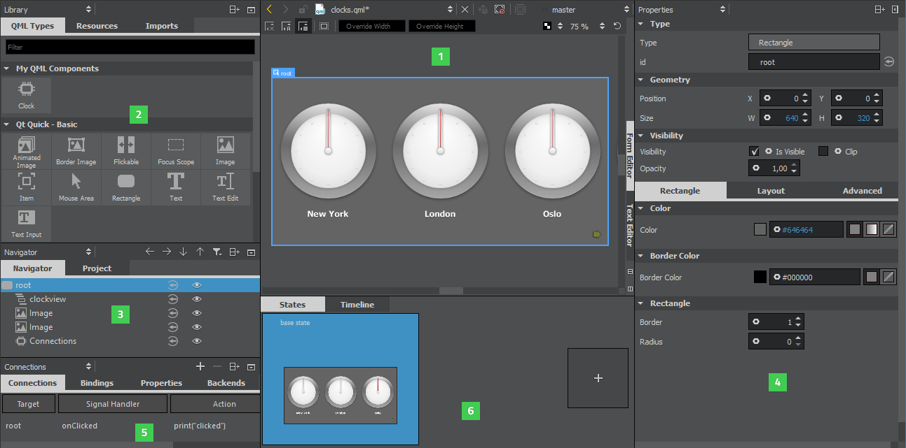
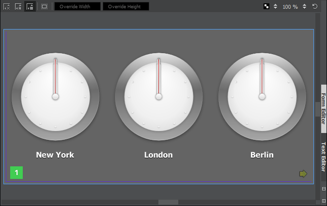
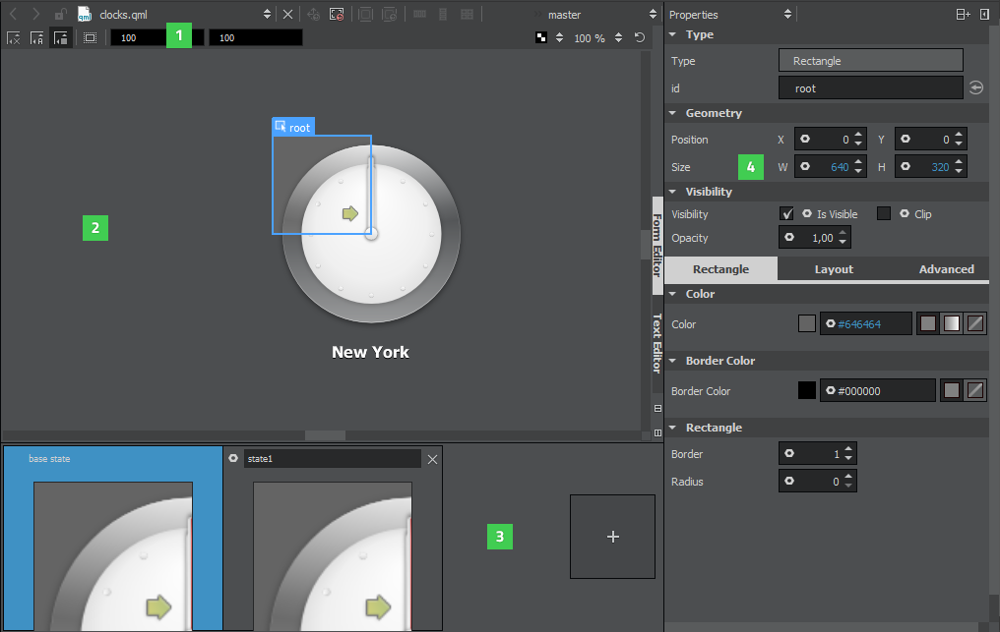

Editing QML Files in Design Mode
Qt Creator opens UI forms (ui.qml files) in the Form Editor tab in the Design mode. It is recommended that you use UI forms for components that you want to edit in the Design mode.

To manage your project in the Design mode:
- Canvas (1) is the working area where you create QML components and design applications. In the Form Editor tab, you can use a visual editor to design UIs, and in the Text Editor tab, you can use a code editor to edit the QML code generated by the visual editor.
- Use the sidebars to select QML types to use in the project, to specify properties for them, and to view them in a tree structure, as well as to create connections and browse projects and files. You can select the content of the sidebars in the sidebar menu:
- Library (2) displays the building blocks that you can use to design applications: predefined QML types, your own QML components, or Qt Quick Controls that you import to the project, and other resources. For more information, see Creating Components.
- Navigator (3) displays the items in the current QML file as a tree structure. For more information, see Managing Item Hierarchy.
- Properties (4) organizes the properties of the selected item. You can change the properties also in the Text Editor. For more information, see Specifying Item Properties.
- Connections (5) enables you to create connections between objects, signals, and object properties. For more information, see Adding Connections.
- File System shows all files in the currently selected directory. For more information, see Viewing the File System.
- Open Documents shows currently open files.
- Projects shows a list of projects open in the current session. For more information, see Viewing Project Files.
- States pane (6) displays the different states of the item. QML states typically describe user interface configurations, such as the UI controls, their properties and behavior and the available actions. For more information, see Adding States.
Snapping to Parent and Sibling Items
You design applications on the canvas by placing items on it.
When you are working on a design, you can use snapping to align items on the canvas. Click the button to have the items snap to their parent or sibling items. Snapping lines automatically appear to help you position the items. Click the  button to anchor the item to the items that you snap to.
button to anchor the item to the items that you snap to.
Choose Tools > Options > Qt Quick > Qt Quick Designer to specify settings for snapping. In the Parent item padding field, specify the distance in pixels between the parent item and the snapping lines. In the Sibling item spacing field, specify the distance in pixels between sibling items and the snapping lines.
The following image shows the snapping lines (1) when Parent item padding is set to 5 pixels.

Hiding Item Boundaries
The Design mode displays the boundaries of items on the canvas. To hide the boundaries, click the  button.
button.
Selecting Items
When you point the mouse to overlapping items, the frontmost item is selected by default. However, items that do not have any content, such as the mouse area, are typically located in front of items that do have content, such as rectangles or border images. To select items with content by default, click the button.
Previewing Component Size
The width and height of the root item in a QML file determine the size of the component. You can reuse components, such as buttons, in different sizes in other QML files and design UIs for use with different device profiles, screen resolution, or screen orientation. The component size might also be zero (0,0) if its final size is determined by property bindings.
To experiment with different component sizes, enter values in the Override Width and Override Height fields (1) on the canvas toolbar. The changes are displayed on the canvas (2) and in the States pane (3), but the property values are not changed permanently in the QML file. You can permanently change the property values in the Properties pane (4).

Specifying Canvas Size
To change the canvas size, select Tools > Options > Qt Quick > Qt Quick Designer and specify the canvas width and height in the Canvas group.
Refreshing the Canvas
When you open QML files in the Design mode, the items in the file are drawn on the canvas. When you edit the item properties, the QML file and the image on the canvas might get out of sync. For example, when you change the position of an item within a column or a row, the new position might not be displayed correctly on the canvas.
To refresh the image on the canvas, press R or select the  (Reset View) button.
(Reset View) button.